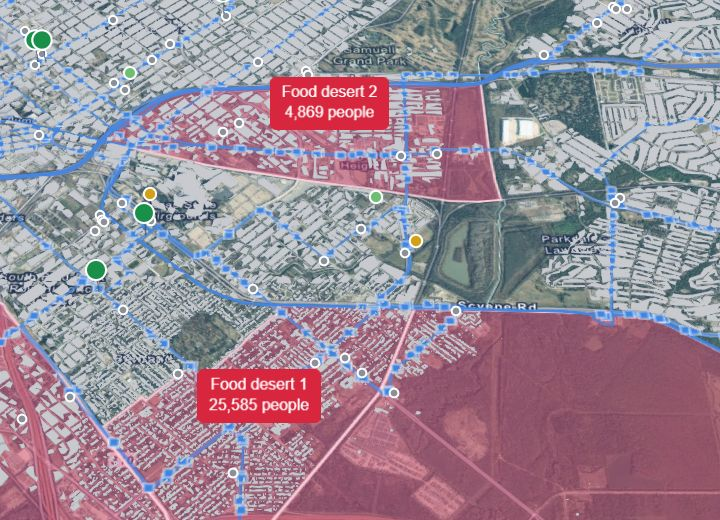
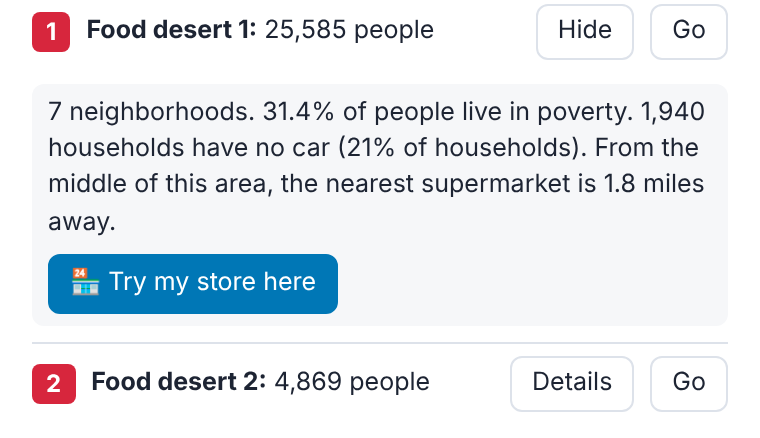
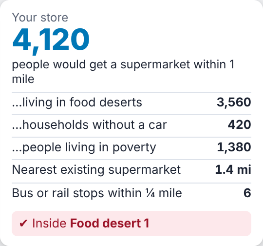
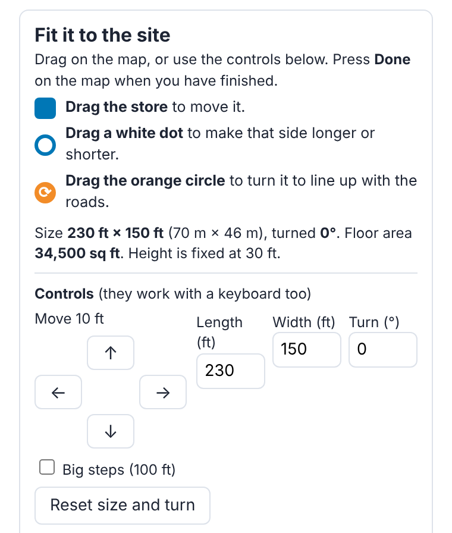
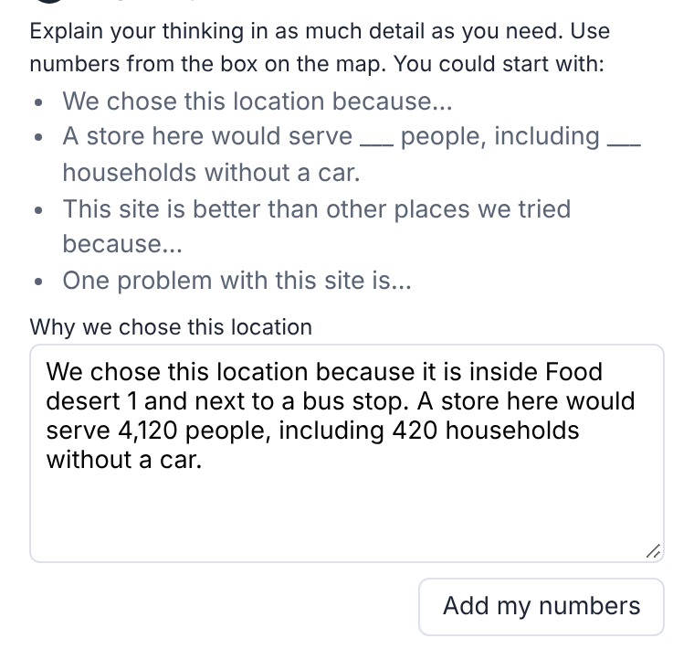
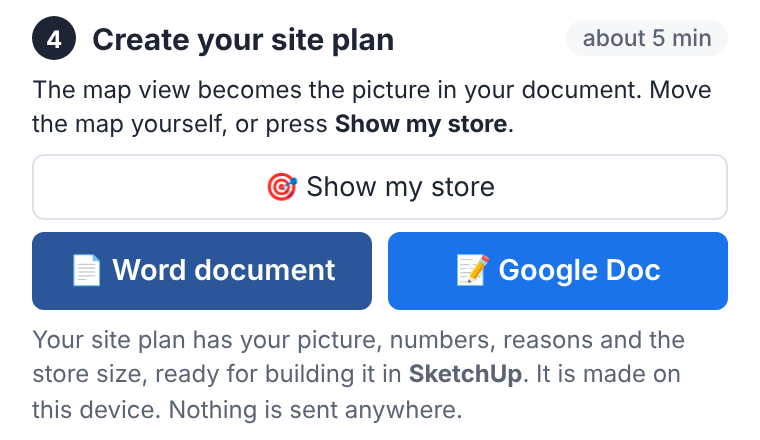
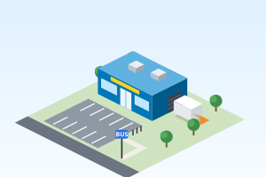

Food Deserts Grocery Store Design Challenge: the 4 steps
Choose the best place for a new supermarket in a food desert. Then design and build it in SketchUp.
- 1 Explore · 10 min
- 2 Place · 15–20 min
- 3 Explain · 10 min
- 4 Site plan · 5 min
- Then: SketchUp
Explore the map about 10 min
Look before you choose. Find:
- The food deserts: the red areas.
- The stores that are already there.
- Buses and trains: zoom in to see them.
- Land to build on: empty lots or big parking lots. You need about 2½ acres, about two football fields.
Map key


Want street names, shops and schools? Press Street map at the top right of the map.
You're done when you have chosen a food desert, found its nearest supermarket and a bus route, and spotted two or three lots.
Place your store about 15–20 min
Press Place my store. Move it over the lots you found.
- Watch the big number. It shows how many people would get a supermarket nearby.
- Try at least three spots. Go back returns to your best one.
- Put it on open land, not on houses or roads.

Fit it to the land. Drag the white dots to change the size. Drag the orange circle to turn it. Press Done.

You're done when your store sits on real open land, in or next to your food desert, lined up with the roads.
Explain your choice about 10 min
Write as much as you need. Say:
- why you chose this spot
- who it would serve (use the numbers)
- how people without a car get there
- one problem with the site
Add my numbers puts the numbers in for you. Add your name or team too.

You're done when your writing names the food desert, uses at least two numbers, mentions buses, trains or walking, and gives one problem.
Create your site plan about 5 min
- Press Show my store. The map view becomes the picture in your plan.
- Press Google Doc (on a Chromebook) or Word document.
- The file saves to your Downloads.
Your plan has your picture, numbers, reasons, the store's size and the SketchUp steps.

You're done when the site plan file is in your Downloads.

Next: design and build it in SketchUp.
Follow the steps at the end of your site plan. Type the sizes instead of drawing them. Add an entrance, a loading bay, parking, bike racks and a path to the bus stop.